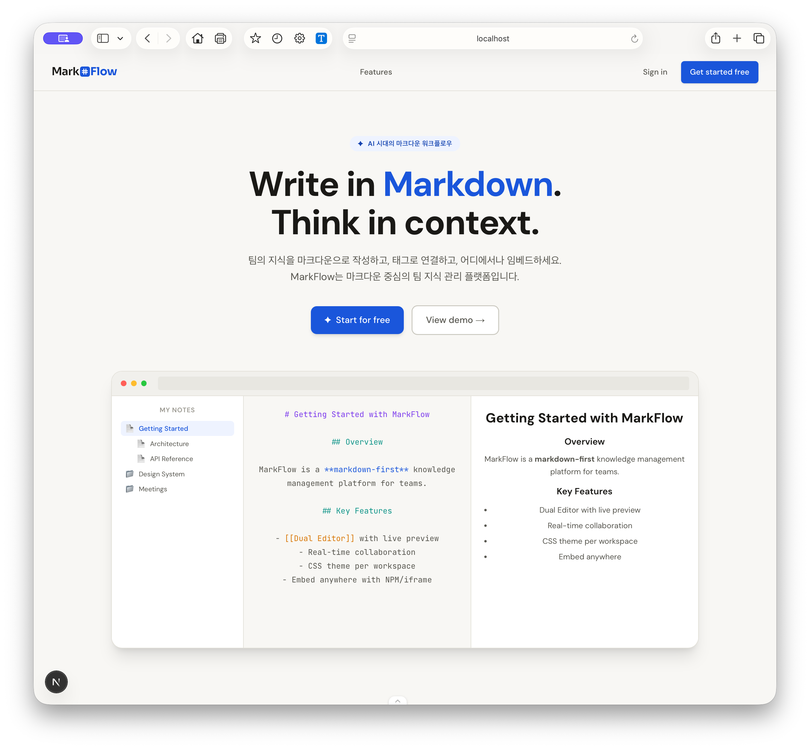

Screenshots
실제 화면.

Editor & PreviewDUAL · LATEX · LINK

Document MapRELATION · GRAPH
팀의 지식을 마크다운으로 쌓고, 관계로 연결하고, 어디로든 퍼블리시하세요. 문서 간 구조를 시각화하는 관계 맵과 듀얼 에디터로 설계된 지식 관리 시스템.

# Simplite 온보딩 가이드 ## 개요 MarkFlow는 **마크다운 기반** 지식 관리 시스템입니다. 팀의 모든 문서를 하나의 구조로 연결하세요. ## 핵심 기능 - [[듀얼 에디터]] · 실시간 프리뷰 - 문서 관계 맵 시각화 - LaTeX 수식: $E = mc^2$ - `인라인 코드` 하이라이트 ## 연결된 문서 이전 문서 ← [[설치 가이드]] 다음 문서 → [[워크스페이스 설정]]
왼쪽 마크다운, 오른쪽 프리뷰. 양쪽이 함께 스크롤되어 긴 문서도 편집이 자연스럽습니다.
작성한 문서를 그대로 슬라이드로 변환. 문서와 발표 자료를 같은 소스에서 만듭니다.
수식, 코드 블록, 다이어그램, 표까지. 학술·기술 문서에 필요한 고급 포매팅을 기본 제공합니다.
이전·다음·상위·연관 문서가 그래프로 시각화. 지식의 맥락 위에서 이동합니다.
드래그만으로 자체 스토리지에 업로드. 드롭한 순간 마크다운 문법으로 본문에 삽입됩니다.
워크스페이스 단위의 관리, 폴더별 접근 권한. 공개/비공개 문서를 섞어 운영할 수 있습니다.
Cloudflare Workers · GitHub Pages 연동. 한 번 설정하면 이후엔 배포 버튼만 누르면 됩니다.
매뉴얼·도움말 사이트를 문서 트리로 바로 구성하고 퍼블리시. 별도 정적 사이트 생성기가 필요 없습니다.
자동 요약·검증·출처 관리. 팀 지식 베이스에 연결된 전용 AI 어시스턴트를 엔터프라이즈 플랜에서 지원.
오픈소스로 지금 시작하거나, 팀·엔터프라이즈 도입을 문의하세요.